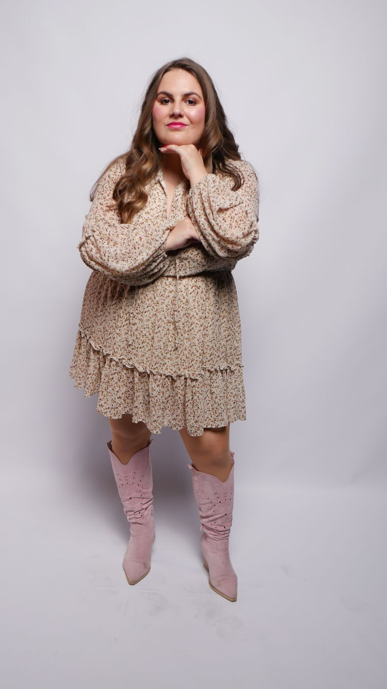
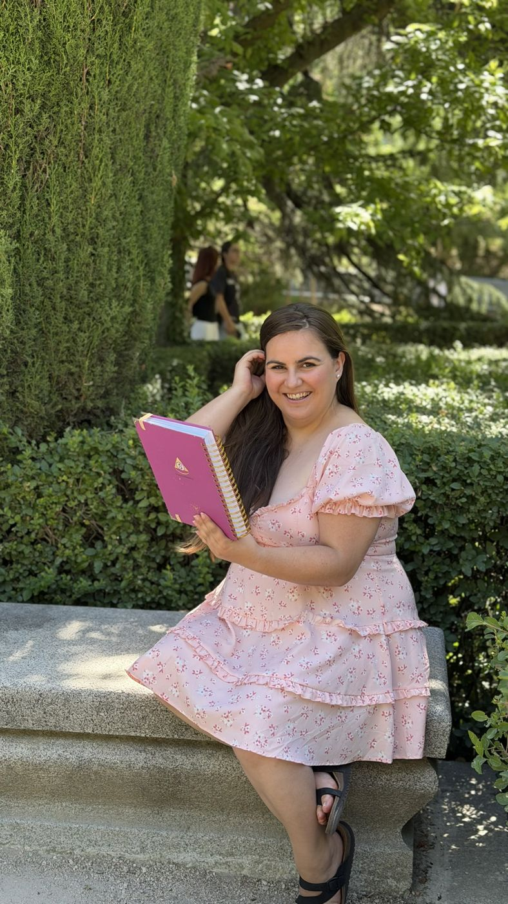

Soy Verónica Salamanca.
12 años acompañando procesos de orden, energía y transformación personal.


He aprendido desde dentro lo que acompaño.
Sabía organizar, pero no sabía organizarme a mí misma. El trabajo personal profundo me enseñó que el orden empieza en el cuerpo, la emoción y la energía.
De ahí nacen Equilíbrate y Arquenza: dos formas de acompañarte, una misma mirada.
Formación que sostiene mi trabajo.
Una selección de lo que más pesa en cómo acompaño.
- Posgrados en RegeneraIncluido sistema nervioso
- Alto rendimiento MindJungFormación completa
- Apoyo psicosocialAcompañar a grupos con seguridad
- Formadora de alto impactoComunicación y grupos
- Gemoaromaterapia estratégicaHerramienta de acompañamiento
Cómo acompaño.
Lo que puedes esperar de trabajar conmigo.
Orden
Estructura simple que se sostiene en el día a día.
Presencia
Escucho lo que dices y también lo que no.
Verdad
Te digo lo que veo, con cuidado y sin rodeos.
Coherencia
Acompaño desde lo que yo misma practico.
“Es como si toda esa nube negra que tenía encima se hubiera difuminado.”I., trabajadoraVer servicios